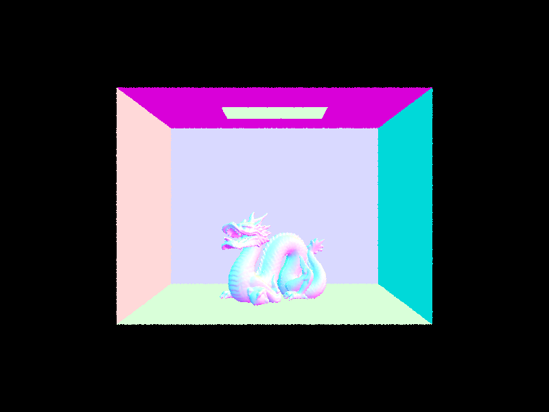

CS 184/284A: Computer Graphics and Imaging, Spring 2024
Sadhika Akula
Part 1: Ray Generation and Scene Intersection
Part 2: Bounding Volume Hierarchy
Part 3: Direct Illumination
Part 4: Global Illumination
Part 5: Adaptive Sampling
overview goes here
The ray generation algorithm implemented allow us to transform coordinates of an image from (x, y) to be coordinates for a Ray in the world space. In order to this, I first converted the (x, y) coordinates to be in the domain [-1, 1] instead of [0, 1]. I then accounted for the field of view calculations, taking into account the fact that hFov and vFov were in radians, not degrees. Finally, I used the c2w matrix to calculate the position of the virtual axis-aligned sensor with respect to our new coordinates. I calculated the normalized version of this vector and then returned the Ray that started from the given pos vector to this newly calculated world space vector.
To generate pixel samples, for each sample, I picked a random sample by calling gridSampler->get_sample(). I then call generateRay on the sampled coordinates, making sure to normalize by the width and the height of the image. For each ray generated in the loop, I call est_radiance_global_illumination and sum up the total illumination from all the rays. I then take the average based on the number of samples and return a final call to update_pixel to render this pixel with the color.
In order to calculate ray-triangle intersection, I followed the Möller-Trumbore intersection algorithm. In order to use this algorithm, I first calculated a set of variables to make the calculations easier, specifically: E1, E2, S, S1, and S2. I then calculated the inverse determinant and multiplied this by the matrix: \([S2 \cdot E2, S1 \cdot S, S2 \cdot D]^T\). This gave me the final matrix, \([t, b1, b2]^T\). After getting the values for t, b1, and b2, I tested all of them to make sure that they were within (0, 1). I repeated this same calculation for the intersect function, but also added updates to the isect variable, by calculating a normal vector based on our values for b1, b2, and 1 - b1 - b2.
In order to calculate ray-sphere intersection, I followed the description from the slides and generated a quadratic equation for the intersection of the ray and the sphere. In order to simplify the calculations, I returned false if the determinant was less than zero because we want only positive roots. I then followed the same steps as ray-triangle intersection to assign values to our intersection. I also made sure to update the max clipping frame with t.
ray-sphere intersectiondragon normal shadingbanana normal shading